Actions on Google is a developer platform that lets you create software to extend the functionality of the Google Assistant, Google's virtual personal assistant, across more than 500 million devices, including smart speakers, phones, cars, TVs, headphones, and more. Users engage Google Assistant in conversation to get things done, like buying groceries or booking a ride (for a complete list of what's possible now, see the Actions directory.) As a developer, you can use Actions on Google to easily create and manage delightful and effective conversational experiences between users and your own 3rd-party service.
This codelab covers steps to build actions for Smart Displays. Actions we build here are operated by a voice and a screen Smart Display provides.
We don't describe a detail for developing basic actions with Actions on Google and Dialogflow in this codelab. If you want to know how to build a general action, see Build Actions for the Google Assistant (Level 1), Build Actions for the Google Assistant (Level 2) and Build Actions for the Google Assistant (Level 3).
What you'll build
In this codelab, we build an action for Smart Display with Interactive Canvas.
- Add visual information which max utilizes a screen of Smart Display for a conversation action.
- Update a content on the screen of Smart Display according to an input from a user via voice.
- Send a request to the action when manipulating on the screen by the user.
We build a "rock-paper-scissors" game action in this codelab.
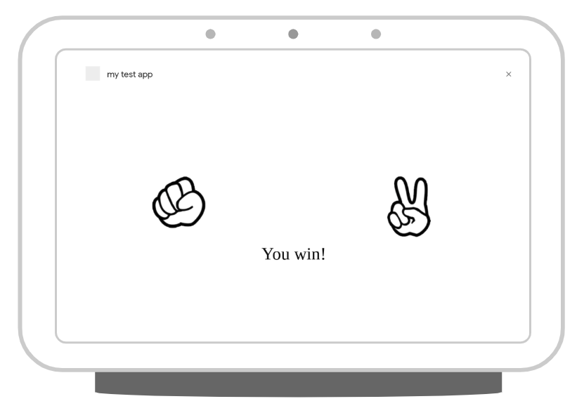
The screenshot below shows an example of the conversation flow in an action you develop. On the first screen, the user chooses whether to show rock, paper or scissors. Then switch to an image that shows while thinking what the action will give. And, we display the result of rock-paper-scissors. Finally, ask the user if they want to play again.
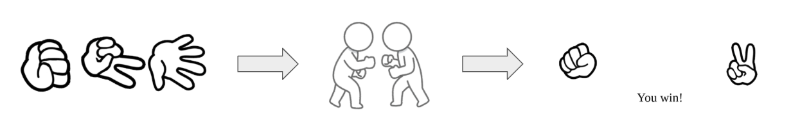
What you'll learn
- How to add a visual information with Interactive Canvas to a conversation action.
- How to receive a voice input from a user and update a screen against the input.
- How to receive an event on the screen from a user and do something against the event.
What you'll need
The following tools must be in your environment:
- IDE/Text editor you choose like WebStorm, Atom or Sublime.
- Terminal to execute shell commands including NodeJS, npm and gif you installed.
- Web browser like Chrome.
Familiarity with JavaScript (ES6) is strongly recommended, although not required, to understand the webhook code used in this codelab.
Optional: Get the sample code
You can optionally get the full project code for this codelab from our GitHub repository.
Interactive Canvas connects your conversational Action to an interactive web app so that your users can interact with your visual user interface through voice or touch. There are four components to an Action that uses Interactive Canvas:
- Custom Conversational Action: An Action that uses a conversational interface to fulfill user requests. Actions that use Interactive Canvas operate in the same fundamental way as any conversational Action, but use immersive web views (ImmersiveResponse) to render responses instead of rich cards or simple text and voice responses.
- Web app: A front-end web app with customized visuals that your Action sends as a response to users during a conversation. You build the web app with web standards like HTML, JavaScript, and CSS. assistantCanvas lets your web app communicate with your Conversational Action.
- assistantCanvas: JavaScript API that you include in the web app to enable communication between the web app and your conversational Action.
- ImmersiveResponse: A response type that defines how the web app should render.
To illustrate how Interactive Canvas works, imagine a hypothetical Interactive Canvas Action called Cool Colors that changes the device screen color to whatever color the user says. After the user invokes the Action, the flow looks like the following:
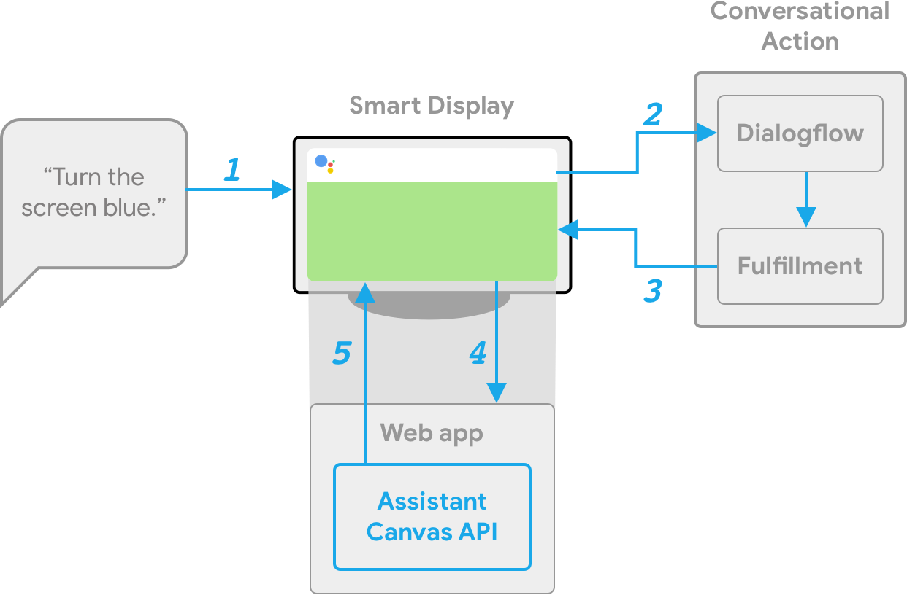
- The user says Turn the screen blue to the Assistant device (a Smart Display in this case).
- The Actions on Google platform routes the user's request to Dialogflow to match an intent.
- The fulfillment for the matched intent is run and an ImmersiveResponse is sent to the Smart Display. The device uses the URL to load the web app if it has not yet been loaded.
- When the web app loads, it registers callbacks with the assistantCanvas API. The state value is then passed into the registered onUpdate callback of the web app. In our example, the fulfillment sends an ImmersiveResponse with a state that includes a variable with the value of blue.
- The custom logic for your web app reads the state value of the ImmersiveResponse and makes the defined changes. In our example, this turns the screen blue.
- assistantCanvas sends the callback update to the Smart Display.
If you have already installed the Firebase command-line interface, you can skip these steps and proceed to the next section.
The Firebase Command Line Interface (CLI) allows you to deploy your Actions project to Cloud Functions.
To install or upgrade the CLI, run the following npm command:
npm -g install firebase-toolsTo verify that the CLI has been installed correctly, open a terminal and run the following command:
firebase --versionMake sure the version of the Firebase CLI is above 3.5.0 so it has all the latest features required for Cloud Functions. If it's not, run npm install -g firebase-tools to upgrade.
Authorize the Firebase CLI by running the following command:
firebase loginOk, let's get started to build an action. In this section, you create and prepare each project.
Check your Google permission settings
In order to test the Action that you'll build for this codelab, you need to enable the necessary permissions.
- Go to the ‘Activity Controls' page (https://myaccount.google.com/activitycontrols).
- Sign in with your Google account, if you have not already done so.
- Ensure that the following permissions are enabled:
- Web & App Activity
- Device Information
- Voice & Audio Activity
Setup your Project and Agent
We create an Actions project and also prepare a Dialogflow agent as NLP engine which is necessary for dialog. First, create an Actions project by the following steps:
- Open Actions console.
- Click the Add/import project.
- Fill in Project name like 'rock-paper-scissors". This name is for your own internal reference; later on, you can set an external name for your project.
- Click Create Project.
- Click Conversational on the bottom of the page.
After creating Actions project, turn on Interactive Canvas feature. To do this, do the following steps:
- Click Deploy > Directory information on the left navigation.
- Select "Games & fun" on the Additional Information > Category.

- Check the "Yes" of Interactive Canvas.
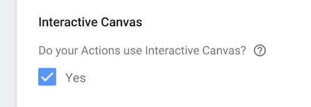 - Click the SAVE button on the top of the page.
Next, create a Dialogflow agent by the following steps:
- Click the Build > Actions on the left navigation.
- Click the Add your first Action.
- On the Create Action dialog, select Custom Intent and click the Build to launch the Dialogflow console.
- In the Create Agent on the Dialogflow console, click Create.
Generate Code Set
In this codelab, we create each code on your local environment. For instance, we create two codes: fulfillment code and web content displayed on Interactive Canvas. The fulfillment is implemented with Cloud Functions for Firebase, and the web content is implemented with Firebase Hosting.
Ok, generate the code set. Open the terminal, and execute the following command.
$ mkdir rock-paper-scissors-ja
$ cd rock-paper-scissors-ja
$ firebase initThe firebase command asks you some questions. Answer as the following:
- Which Firebase CLI features do you want to set up for this folder? - Select Functions and Hosting.
◯ Database: Deploy Firebase Realtime Database Rules
◯ Firestore: Deploy rules and create indexes for Firestore
❯◉ Functions: Configure and deploy Cloud Functions
◉ Hosting: Configure and deploy Firebase Hosting sites
◯ Storage: Deploy Cloud Storage security rules- Select a default Firebase project for this directory - When creating your Actions project, the Google Cloud Platform is created at the same time. Here, we select the project ID. If you want to create other new project, select "[Create a new project]".
- What language would you like to use to write Cloud Functions? - Select "JavaScript" in this codelab.
❯ JavaScript
TypeScript - Do you want to use ESLint to catch probable bugs and enforce style? - Select "N".
- Do you want to install dependencies with npm now? - select "Y".
When completing to answer the questions above, files for function and hosting are generated, then dependencies are installed. Next, questions for configuring Hosting are shown. Answer like the following.
- What do you want to use as your public directory? - Type "public".
- Configure as a single-page app (rewrite all urls to /index.html)? - Select "N".
The following files are generated.
├── .firebaserc
├── .gitignore
├── firebase.json
├── functions
│ ├── .gitignore
│ ├── index.js
│ ├── node_modules
│ ├── package-lock.json
│ └── package.json
└── public
├── 404.html
└── index.htmlAdd Dependencies and Create Initial Files for Fulfillment
We add Actions on Google Client Library as dependencies to generated function code set. Execute the following commands.
$ cd functions
$ npm install actions-on-google@preview --save
$ cd ..Next, replace the content of index.js file in the functions directory with the following content.
const functions = require('firebase-functions');
const {
dialogflow,
ImmersiveResponse
} = require('actions-on-google');
const firebaseConfig = JSON.parse(process.env.FIREBASE_CONFIG);
const app = dialogflow({
debug: true
});
// TODO: Write your code here.
exports.fulfillment = functions.https.onRequest(app);Deploy your Fulfillment and Web Content
After generating your code set, we deploy your fulfillment and Web content to Firebase. Do the following steps.
$ firebase deployAfter a few minutes, you should see "Deploy complete!", which indicates that you've successfully deployed your webhook to Firebase.
Retrieve the deployment URL
You need to provide Dialogflow with the URL to the cloud function. To retrieve this URL, follow these steps:
- Open the Firebase Console.
- Select your Actions project from the list of options.
- Navigate to Develop > Functions on the left navigation bar. If you're prompted to "Choose data sharing settings", you can ignore this option by clicking Do this later.
- Under the Dashboard tab, you should see an entry for "dialogflowFirebaseFulfillment" with a URL under Trigger. Copy this URL.
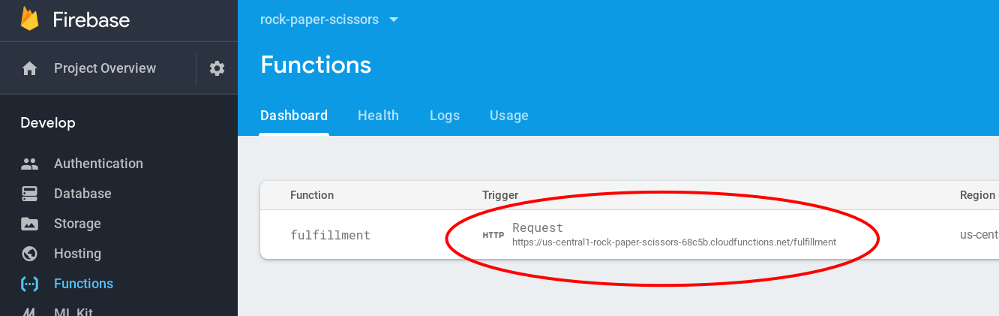
Set the URL in Dialogflow
Now, you need to update your Dialogflow agent to use your webhook for fulfillment. To do so, follow these steps:
- Open the Dialogflow Console.
- Click Fulfillment on the left navigation.
- Enable Webhook.
- Paste the URL you copied from the Firebase dashboard if it doesn't already appear.
- Click Save.
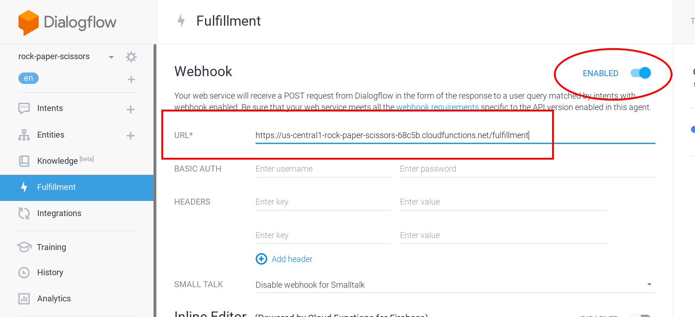
Verify your project is correctly set up
At this point, users can start a conversation by explicitly invoking your Action. Dialogflow sends a reply against invoking from the user and then Google Assistant says that. Here, we confirm the behavior of your action.
To test out your Action in the Actions simulator:
- In the Dialogflow console left navigation, click on Integrations > Google Assistant.
- Make sure Auto-preview changes is enabled and click Test to update your Actions project.
- The Actions simulator loads your Actions project. To test your Action, type "Talk to my test app" into the Input field and press enter.
- You should see the reply like "Sure. Let's get the test version of my test app.".
- Type "cancel". Then, the conversation is ended.
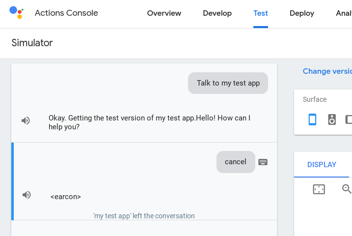
The instance of Interactive Canvas is a Web page. Your action requests the use of Interactive Canvas to Google Assistant, the Web page is displayed on a screen of Smart Display or Android Smartphone.
In this section, we configure some things to use Interactive Canvas.
Change the Configuration of Firebase Hosting
The Web browser for Interactive Canvas is very limited environment than general Web browser environment. The following items are a part of the limitations.
- No cookies.
- No local storage.
- No geolocation.
- Can't use camera.
- Can't use popups like alert(), confirm() and etc.
- The origin for Ajax is null.
- The available memory size is limited less than 200MB.
- It is necessary to accept requests from null origin for assets.
Especially, the origin is null, therefore, you need set "*" for Access-Control-Allow-Origin response header when you deliver your Web content on Firebase Hosting. Also, it needs to turn off each cache mechanism so that your Web content can be displayed normally.
Replace the content with the following code in the firebase.json file.
{
"hosting": {
"public": "public",
"ignore": [
"firebase.json",
"**/.*",
"**/node_modules/**"
],
"headers": [
{
"source": "**",
"headers": [
{
"key": "Cache-Control",
"value": "no-cache,no-store,must-revalidate"
},
{
"key": "Access-Control-Allow-Origin",
"value": "*"
},
{
"key": "Access-Control-Expose-Headers",
"value": "ETag"
}
]
}
]
}
}Create a template for Web page
Here, we create files which become as a base for Web page displayed on Interactive Canvas. First, create a new directory to put each file with the following commands.
$ cd public
$ mkdir css
$ mkdir images
$ mkdir js
$ cd ..Create Stylesheet
Next, we create a stylesheet to define a design of the Web page. Create a new file named "public/css/index.css" which has the following content.
html {
display: flex;
height: 100%;
}
body {
display: flex;
flex: 1;
margin: 0;
background-color: white;
flex-direction: column;
justify-content: center;
align-items: center;
}
div.container {
width: 100%;
text-align: center;
}
#welcome {
display: block;
}
#welcome img {
flex: 1;
animation: rotate-anime 3s linear infinite;
}
@keyframes rotate-anime {
0% {transform: rotate(0);}
100% {transform: rotate(360deg);}
}
#vs {
display: none;
}
#result {
display: none;
}
.result-row {
display: flex;
}
.result-row div {
flex: 1;
}
#message {
display: none;
font-size: 48px;
}Create HTML file
After generating the code set with firebase command, the "public/index.html" file has already been created. Replace the content of the index.html file with the following content.
<!DOCTYPE html>
<html>
<head>
<meta charset="utf-8" />
<meta name="viewport" content="width=device-width, initial-scale=1" />
<title>Rock, Paper, Scissors!</title>
<link rel="shortcut icon" type="image/x-icon" href="data:image/x-icon;," />
<link rel="stylesheet" href="https://www.gstatic.com/assistant/immersivecanvas/css/styles.css" />
<link rel="stylesheet" href="css/index.css" />
<script src="https://www.gstatic.com/assistant/immersivecanvas/js/immersive_canvas_api.js"></script>
</head>
<body>
<div class="container">
<div id="welcome">
<img src="images/rock.png" />
<img src="images/scissors.png" />
<img src="images/paper.png" />
</div>
<div id="vs">
<img src="images/vs.png" />
</div>
<div id="result">
<div class="result-row">
<div>
<img id="user-choice" src="" />
</div>
<div>
<img id="action-choice" src="" />
</div>
</div>
<div id="message">
</div>
</div>
</div>
<script src="js/index.js"></script>
</body>
</html>A Web page for Interactive Canvas needs to fulfill the following.
- Load the stylesheet below.
https://www.gstatic.com/assistant/immersivecanvas/css/styles.css - Load the JavaScript file below.
https://www.gstatic.com/assistant/immersivecanvas/js/immersive_canvas_api.js
Also, we recommend that the Web page is created as a responsive and SPA (Single Page Application).
In this codelab, mainly three structures are operated in the HTML file.
- div#welcome - The screen so that users choose one of rock, paper or scissors. Each image is displayed on this.
- div#vs - The screen which represents the action is thinking what it shows. The image represents "Duel" is displayed.
- div#result - The screen to display the result of rock-paper-scissors. Both images the user and the action showed are displayed. The message represents whether the user won or not is also displayed.
According to the progress of the conversation, one of the three elements above is displayed.
Create JavaScript file
A Web page interacts with a Fulfillment on running Interactive Canvas. The JavaScript code changes the content of the Web page dynamically.
Here, we create an empty JavaScript file. Create the index.js file in the public/js directory with an empty content.
'use strict';
// TODO: Write your code here.Download image files
In this codelab, we use some images. Download the zip file with the image files from the following URL.
Then, execute the following commands to put these images files into the public/images directory.
$ cd public/images
$ unzip <The path to images.zip>
$ cd ../..The preparations have been completed. Ok, let's get started to build our action.
We build a "rock-paper-scissors game" action in this codelab. When invoking the action, the action asks the user "Which do you show? Rock, paper or scissors?" by voice. At the same time, three images represents rock, paper and scissors are displayed on the Smart Display. The user can't specify the hand by voice only, but the user also can specify it by tapping each image on the screen.
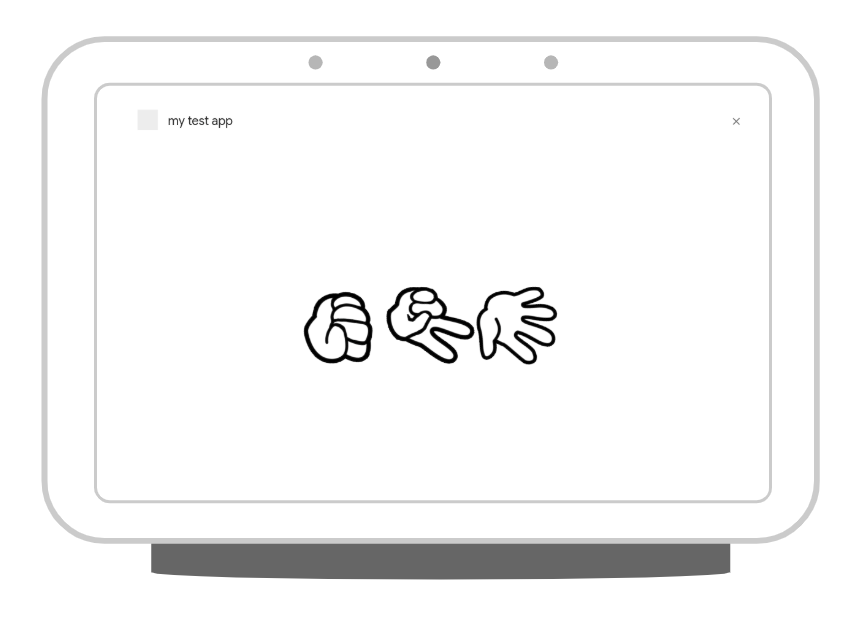
Configure the Default Welcome Intent
After creating Dialogflow agent, the following two intents are created automatically.
- Default Welcome Intent - The intent at the action invoked.
- Default Fallback Intent - The intent to handle for when no any intents are matched.
After just cretating the Dialogflow agent, the two intents above are configured without fulfillment. Here, we configure the Default Welcome Intent to turn on the fulfillment.
Do the following steps to enable Fulfillment for the Default Welcome Intent.
- In the left navigation on the Dialogflow Console, click Intents.
- In the center of the intent list, click Default Welcome Intent.
- Expand the Fulfillment section on the bottom of the Default Welcome Intent configuration page, turn on the Enable webhook call for this intent.

- Push Save button.
Implement the Default Welcome Intent handler
We use an ImmersiveResponse object provided by Actions on Google Client Library so that we display a screen on Smart Display with Interactive Canvas. This object is used to send information (which web page is displayed, how the conversation state is changed according to interaction with the user) to the screen on Smart Display.
Find the line like below in the functions/index.js file.
// TODO: Write your code here.Add the following code under the line above.
app.intent('Default Welcome Intent', conv => {
conv.ask('Which do you want to show? Rock? Paper? Or, Scissors?');
conv.ask(new ImmersiveResponse({
url: `https://${firebaseConfig.projectId}.firebaseapp.com/`
}));
});In the first conv.ask() calling, the code specifies the phrase to ask the user by Google Assistant.
And, to draw the Web page on the screen with Interactive Canvas, the code calls the conv.ask() method with generated ImmersiveResponse object which has the URL of the Web page. Google Assistant draws the Web page on Smart Display based on the URL specified by the url property.
This URL set here is the URL of the Web page delivered from Firebase Hosting. We construct the URL including the Actions Project ID retrieved from process.env.FIREBASE_CONFIG dynamically.
Send a phrase from JavaScript
Your action can display visual information on the Smart Display with Interactive Canvas. If the screen supports a Touch manipulation, your action can handle the event by JavaScript. And, like the same as users say a phrase by voice, your action can send the phrase to Google Assistant as the user says.
The assistantCanvas object is provided for Interactive Canvas. When your action passes a string to the sendTextQuery() method of the assistantCanvas object, the phrase is sent to the Google Assistant.
Here, we add event handlers to each element of three images (rock, paper and scissors). And, add a process to send a phrase represents the hand which the user tapped to Google Assistant, for when one of the elements is tapped.
There is the div element which has the "welcome" value as ID in the public/index.html file.
<div id="welcome">
<img src="images/rock.png" />
<img src="images/scissors.png" />
<img src="images/paper.png" />
</div>There are three img elements as each child element of the div element. We add a data-choice attribute for each img element. Each element has each one of rock, paper or scissors.
<div id="welcome">
<img src="images/rock.png" data-choice="rock" />
<img src="images/scissors.png" data-choice="scissors" />
<img src="images/paper.png" data-choice="paper" />
</div>Next, register an event handler to each img element in public/js/index.js file. You see the following line in public/js/index.js file.
// TODO: Write your code here.We add the code below under the line above.
document.querySelectorAll('#welcome img').forEach(img => {
img.addEventListener('click', elem => {
assistantCanvas.sendTextQuery(elem.target.dataset.choice);
});
});In the event handler, add a click event handler to an img element. And, the handler retrieves the hand name of rock-paper-scissors related to the dataset.choice of the target img element tapped. Last, the code passes the name to the sendTextQuery() method of the assistantCanvas object from the JavaScript code, like as the phrase is sent to the Google Assistant.
Test Your Action
Now, let's deploy your current code to Firebase and test it. Execute the following command in your terminal.
$ firebase deployAfter a few minutes, you should see "Deploy complete!", which indicates that you've successfully deployed your webhook to Firebase.
Next, we invoke your action on Actions Console Simulator.
To test out your Action in the Actions simulator:
- Open Actions console.
- If other project is selected on the top of the page, select the Actions project you created for this codelab.
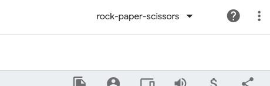
- In the top navigation, click Test.
- On the Surface configuration item of Actions Simulator, click "Smart Display".
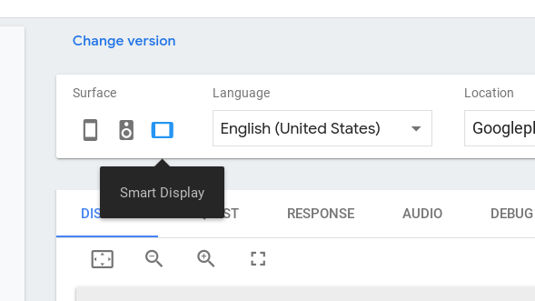
- To test your action, type "talk to my test app" into the Input field and press the Enter key.
- If the DISPLAY tab not selected, click the Display tab.
- You see that each image (rock, paper and scissors) is revolving. Click one of them. So, confirm whether the name of the image you clicked is sent to Google Assistant.
- Type "cancel". Then, the conversation is ended.
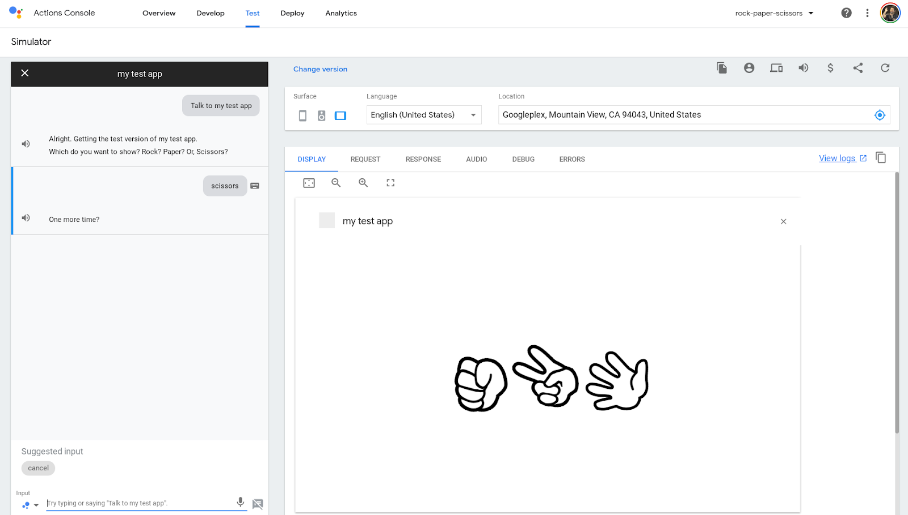
At this time, the intent to handle each hand name is not defined yet, therefore, it is recognized as Default Fallback Intent.
Now, users can invoke your action and they can show one of rock, paper or scissors. What you will do next is to implement the feature that your code decides the hand which the action shows in random order and compare the user's hand with the action's hand and decides whether the user win or not. Then, your code changes the screen on Smart Display according to the result.
Here, we need to define more detail steps. After users say one of rock, paper or scissors to Google Assistant, implement the following behaviors.
- Dialogflow recognizes what one of the rock, paper or scissors was said, and it notifies this to your fulfillment.
- Your fulfillment determines a hand of the action in random order. And, it compares the hand with the received user's hand, then decides whether the user won or not.
- Your fulfillment returns the SimpleResponse with the phrase to notify the decision to the user to Google Assistant. At the same time, your fulfillment creates the ImmersiveResponse object with user's hand, action's hand and the message represents the decision, and it also is returned to the Google Assistant.
- The JavaScript code running on the screen catches the information returned from the fulfillment. Then, the code changes the image represents a duel.
- After a certain time, the code changes images: user's hand, action's hand and the message represents the decision.
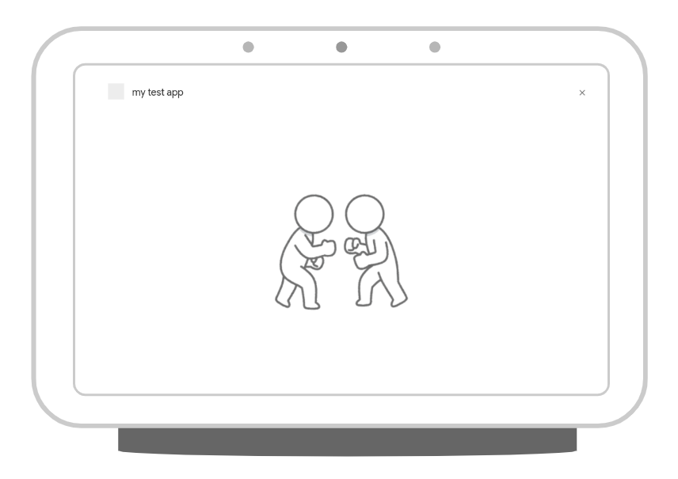
Define entity of each hand of rock-paper-scissors
To correctly recognize the phrase represents one of rock, paper or scissors the user said to Google Assistant, we define an entity on your Dialogflow agent.
Define the entity by the following steps.
- Open Dialogflow Console.
- In the left navigation, move to Entities.
- Click the CREATE ENTITY on the top of the right.
- Type "user-choice" as Entity name.
- Click Click here to edit entry, and type the following.
- Type "rock" into Enter reference value.
- Type "stone" into Enter synonym.
- Type the following as well.
- Enter reference value: "paper"
- Enter reference value: "scissors"
- Click SAVE button.
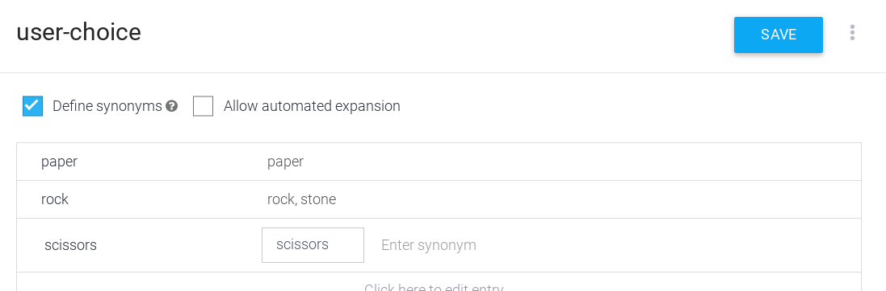
Define intent to handle rock, paper or scissors
Next, we define an intent to recognize the phrase represents the hand of rock-paper-scissors the user said with the user-choice entity we defined. Define the intent by the following steps.
- Open Dialogflow Console.
- In the left navigation, move to Intents.
- Click the CREATE INTENT.
- Type "Show" into Intent name.
- Click the ADD TRAINING PHRASES. Then, type the following into Add user expression.
- rock
- scissors
- paper
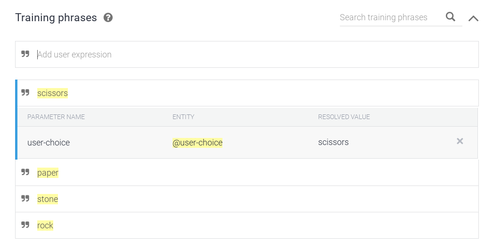
- Expand the Fulfillment, and click the ENABLE FULFILLMENT. Then, turn on the Enable webhook call for this intent.
- Click the SAVE button.
Define Show intent handler
We defined the Show intent on Dialogflow agent. That is, when users says one of tock. paper or scissors to Google Assistant, your fulfillment is called. In this section, we add a Show intent handler code to your fulfillment implemented with Cloud Functions for Firebase.
First, we define an object to determine a message of decision of the duel for each combination of user's hand and action's hand. We find the following line in functions/index.js file.
// TODO: Write your code here.Add the following code under the line above.
const judgeMap = {
rock: {
rock: 'Same.',
paper: 'You lost.',
scissors: 'You win!'
},
paper: {
rock: 'You win!',
paper: 'Same.',
scissors: 'You lost.'
},
scissors: {
rock: 'You lost.',
paper: 'You win!',
scissors: 'Same.'
}
};On the heels of the code above, add the Show intent handler code below.
app.intent('Show', (conv, param) => {
// Retrieve the user's hand.
const userChoice = param['user-choice'].toLowerCase();
// Determine the action's hand in random order.
const actionChoice = ['rock', 'paper', 'scissors'][Math.floor(Math.random() * 3)];
// Get the message represents the duel.
const message = judgeMap[userChoice][actionChoice];
// Construct the reply message with SSML.
const ssml = `
<speak>
<p>Ok, I decided my hand, too.</p>
<p>Rock, paper, scissors, shoot!</p>
<p>You showed ${userChoice}.</p>
<p>I showed ${actionChoice}.</p>
<p>${message}</p>
<break time="400ms" />
<p>Do you want to play again?</p>
</speak>`;
conv.ask(ssml);
// ImmersiveResponse object with information to update the screen.
conv.ask(new ImmersiveResponse({
state: {
scene: 'result',
userChoice,
actionChoice,
message
}
}));
});According to the Show intent defined in Dialogflow agent, the user-choice parameter value (userChoice) is determned. On the other hand, the user-choice parameter value (userChoice) is decided depending on the user phrase. Your code get it from the param argument, and change it to lowercase. Next, your code decides action's hand (actionChoice) in random order with Math.random(). And, the code determines a message (message) represents the result of the duel with the judgeMap object you defined.
The phrase "Rock, paper, scissors. shoot!" and the result of the duel are notified by the two ways below.
- The phrase with SSML.
- The screen change.
We customize the voice Google Assistant says with SSML. In this code lab, we use the break tag to create silence between sentences.
And, to update the content of the screen on the Smart Display, your code creates the ImmersiveResponse object with the following information and passes it to conv.ask() method.
- scene: The "result" value to move to the "Duel result" scene.
- userChoice: The string represents the user's hand.
- actionChoice: The string represents the action's hand.
- message: The message represents the duel result.
Your code can specify saying a phrase and updating a screen to Google Assistant by passing SSML string and ImmersiveResponse object to conv.ask() method.
Handle screen update request
After Google Assistant receives the ImmersiveResponse object sent from your fulfillment, your JavaScript code is executed to update the screen on Smart Display. For instance, you need to register your callback function called at the timing when it is necessary to update the screen (that is, the timing is the ImmersiveResponse object is returned from your fulfillment).
You can find the line like below in public/js/index.js file.
// TODO: Write your code here.Add the following code under the line above.
assistantCanvas.ready({
onUpdate(state) {
// Display the duel image.
if (state.scene === 'result') {
document.querySelector('#welcome').style.display = 'none';
document.querySelector('#vs').style.display = 'block';
document.querySelector('#user-choice').src = `images/${state.userChoice}.png`;
document.querySelector('#action-choice').src = `images/${state.actionChoice}.png`;
document.querySelector('#message').innerText = state.message;
// Display the result.
}
// Initialize the screen.
}
});You can set an object which has callback functions to ready() method of the assistantCanvas object. There are following two callback functions.
- onUpdate() - This is called when your fulfillment returns an ImmersiveResponse object with the state value.
- onTtsMark() - This is called when starting saying by Google Assistant, the saying finished and a mark tag in SSML is evaluated.
The state object which your fulfillment passed to the ImmersiveResponse object is passed to the onUpdate() callback function without any change. Here, your code determines the screen it should render based on the scene value in the state object. At the same time, your code changes images according to user's and action's hands and displays the message represents the result of duel.
Update the screen against timings during saying phrase
Here, let's try to add a jigalorum at update timing during saying the phrase and updating the screen when Google Assistant says the result of rock-paper-scissors duel to the user. For instance, we implement the following behavior.
- Display the screen represents the duel (the div element which has "vs" value as ID value to display the "public/images/vs.png" image file).
- Say "Ok, I decided my hand, too. Rock, paper, scissors, shoot!".
- Display the screen represents the result (the div element which has "result" value as ID value to display images of user's and action's hands and the message represents the result of the duel).
- Say "You showed rock. I showed scissors. You win! Do you want to play again?".
To implement this behavior, we use the setTimeout() function of JavaScript.
You can find the following line in public/js/index.js file.
// Display the result.Add the code below under the line above.
setTimeout(() => {
document.querySelector('#vs').style.display = 'none';
document.querySelector('#result').style.display = 'block';
document.querySelector('#message').style.display = 'block';
}, 5000);The code above specifies to execute the behavior described the above step 3 after 5 seconds to the setTimeout() function. This brings more rich user experience between combinations of saying and rendering.
Test you action
Now, you can play this rock-paper-scissors game action. Let's deploy your current code to Firebase and test it. Execute the following command in your terminal.
$ firebase deployAfter a few minutes, you should see "Deploy complete!", which indicates that you've successfully deployed your webhook to Firebase.
Next, we invoke your action on Actions Console Simulator.
To test out your Action in the Actions simulator:
- Open Actions console.
- If other project is selected on the top of the page, select the Actions project you created for this codelab.
- In the left navigation, click Test > Simulator.
- On the Surface configuration item of Actions Simulator, click "Smart Display".
- To test your action, type "talk to my test app" into the Input field and press the Enter key.
- If the DISPLAY tab not selected, click the Display tab.
- You see that each image (rock, paper and scissors) is revolving. Click one of them. So, confirm whether the name of the image you clicked is sent to Google Assistant.
- Type "cancel". Then, the conversation is ended.
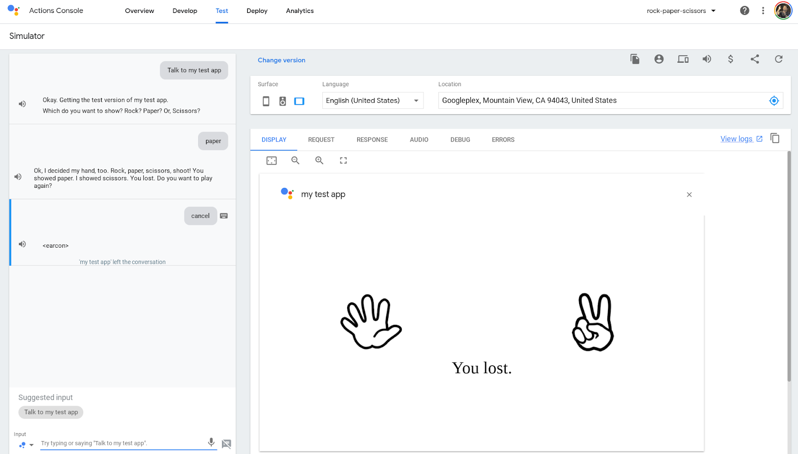
Here, you already have a code set to play the "rock-paper-scissors game". In this section, we implement remaining functions. They are the following.
- Ask whether the user wants to play this game again or not.
- End the conversation anytime.
Add Follow-up intent
After notifying the result of this game for the user, Google Assistant asks the user to want to play this game again. The user need to answer either "Play again" or "End the conversation" for the asking. To implement such feature, the follow-up intent is very convenient.
Ok, register a new follow-up intent by the following steps.
- Open Dialogflow Console.
- In the left navigation, move to Intents.
- When you move your mouse cursor on the row of the "Show" intent. Click it.
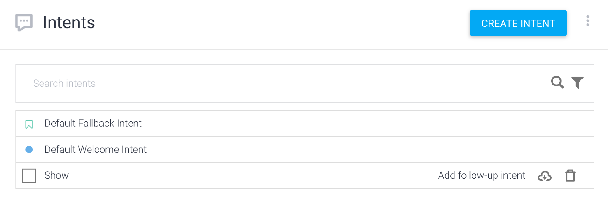
- Open the popup to specify a target intent which you want to create a new follow-up intent. Add yes and no from the list.
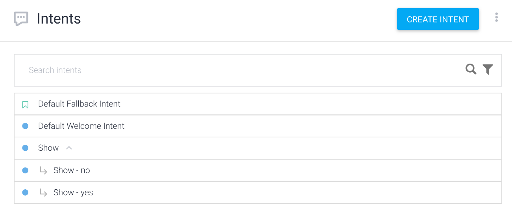
The "Show -no" intent is the intent to end the conversation. Configure it by the following steps.
- In the left navigation, move to Intents.
- Click the "Show - no" in the intent list.
- Type "Thank you for playing. See you again!" in the Text response.
- Turn on the Set this intent as end of conversation.
- Click the SAVE button.
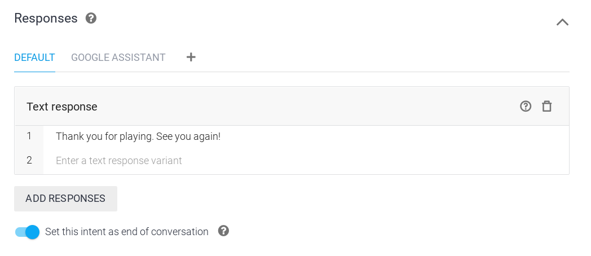
The "Show - yes" intent is the intent to specify to play again. Because this intent effects to the screen, it is necessary to call your fulfillment. Configure this "Show - yes" intent by the following steps.
- In the left navigation, move to Intents.
- Click the "Show - yes" from the intent list.
- Expand Fulfillment, click the ENABLE FULFILLMENT. Then, turn on the Enable webhook call for this intent.
- Click the SAVE button.
And, add the "Show - yes" intent handler to the functions/index.js file. You can find the following line in the functions/index.js file.
// TODO: Write your code here.Add the following code under the line above.
app.intent('Show - yes', conv => {
conv.ask('Ok. Which do you want to show? Rock? Paper? Or, Scissors?');
conv.ask(new ImmersiveResponse({
state: {
scene: 'restart'
}
}));
});By specifying the "restart" value to the scene property, your code specifies to go back to the initial state as the update behavior for the screen.
Add the code in the public/js/index.js file to change the screen to initial state based on the content of this ImmersiveResponse object. You can find the following line in the public/js/index.js file.
// Initialize the screen.Add the following code under the line above.
if (state.scene === 'restart') {
document.querySelector('#welcome').style.display = 'block';
document.querySelector('#vs').style.display = 'none';
document.querySelector('#result').style.display = 'none';
document.querySelector('#message').style.display = 'none';
}This code changes the visibility to display only the "div" element which has the "welcome" value as ID value so that the screen goes back to initial state.
Add End intent
Last, we add a new intent to end the action. Add the end intent by the following steps.
- Open Dialogflow Console.
- In the left navigation, click the Intents.
- Click the CREATE INTENT button.
- Type "End" to Intent name.
- Click the ADD TRAINING PHRASES. Then, fill in phases to the Add user expression. The phrases are strings that users may say to end the action.
- Stop
- End
- Bye-bye
- Type "Thank you for playing. See you again!" to Text response.
- Turn on the Set this intent as end of conversation.
- Click the SAVE button.
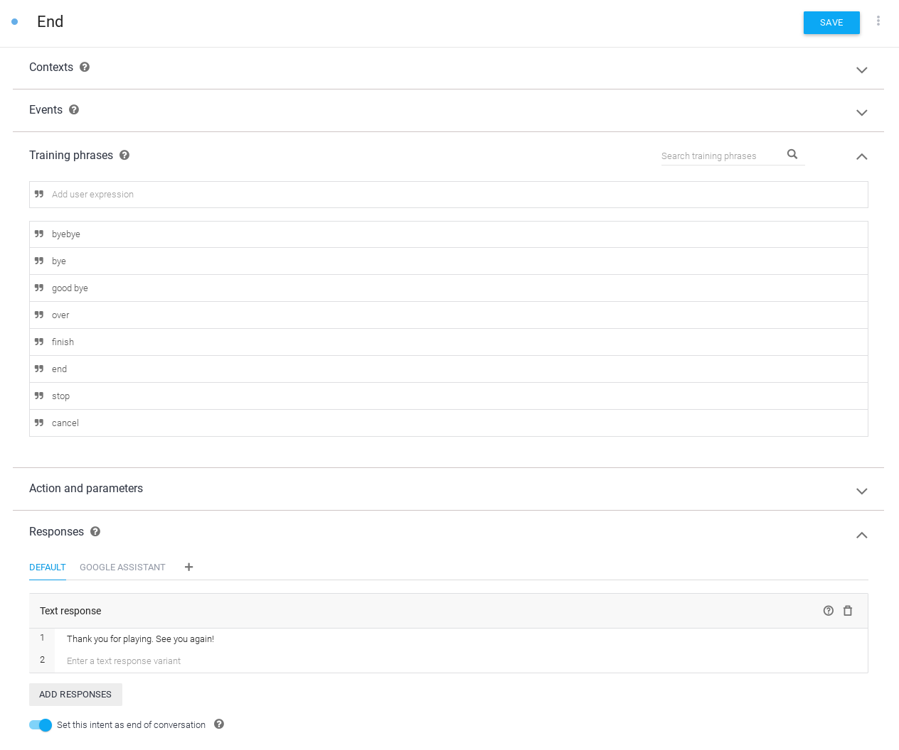
Test
Finally, the action has just been completed! Let's deploy your current code to Firebase and test it. Execute the following command in your terminal.
$ firebase deployAfter a few minutes, you should see "Deploy complete!", which indicates that you've successfully deployed your webhook to Firebase.
Next, we invoke your action on Actions Console Simulator.
To test out your Action in the Actions simulator:
- Open Actions console.
- If other project is selected on the top of the page, select the Actions project you created for this codelab.
- In the left navigation, click Test > Simulator.
- On the Surface configuration item of Actions Simulator, click "Smart Display".
- To test your action, type "talk to my test app" into the Input field and press the Enter key.
- If the DISPLAY tab not selected, click the Display tab.
- You see that each image (rock, paper and scissors) is revolving. Click one of them. So, confirm whether the name of the image you clicked is sent to Google Assistant.
- Type "yes". Then, the game is started again.
Congratulation!
You've now understand how to build conversational actions with Interactive Canvas for Smart Display..
What we've covered
- How to add a visual information with Interactive Canvas to a conversation action.
- How to receive a voice input from a user and update a screen against the input.
- How to receive an event on the screen from a user and do something against the event.
What's next?
To learn more detail about how to use Interactive Canvas, Google has published more rich code sample.
You can explore these resources for learning about Actions on Google:
- actions.google.com: The official documentation site for Actions on Google.
- Actions on Google GitHub repo: Sample code and libraries.
- Dialogflow.com: The official documentation site for Dialogflow.
- Actions on Google Developers: The official Google+ community for developers working with Actions on Google.
Follow us on Twitter @ActionsOnGoogle to stay tuned to our latest announcements, and tweet to #AoGDevs to share what you have built!